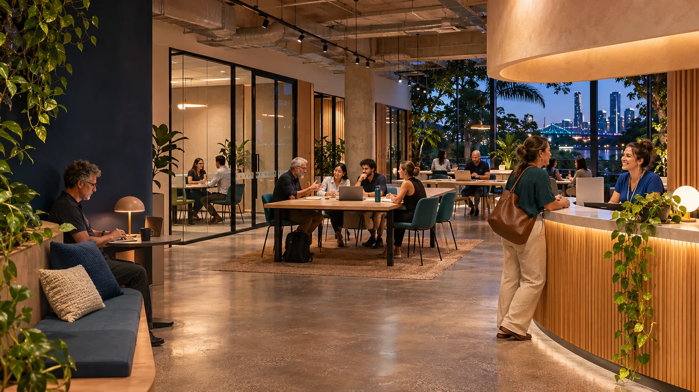

Which activities could meet?
Explore connections between learning, work, creativity, care and community contribution.
Explore →
Aura of Intelligence · A system in development
Exploring an Aura of Intelligence civic establishment in Brisbane: 24/7 overlap, shared spaces and KYC.
System in development · Brisbane · 8 November 2026
AI-generated concept of an adapted Australian civic learning and enterprise space.
Image credit ↗The exploration
Could part of this Brisbane building bring learning, enterprise, creative work, community contribution and practical support into useful overlap?
The starting idea is 24/7 overlap and shared spaces with KYC. The system is still in development: the activity mix, use of rooms and ways of working are questions to explore.
433 Logan Road, Stones Corner is a candidate location. The building evidence and editable calculators help investigate its potential within a much larger body of work.
Examine the place and its evidence →
24/7 overlap
What becomes possible when a shared place can be used at different hours? The answer could grow from the people, activities and spaces involved.
Explore connections between learning, work, creativity, care and community contribution.
Explore →Examine rooms, equipment and indoor capacity before choosing a combination.
Explore →Try different hours in a calculator, without assigning activities to a fixed daily schedule.
Explore →Choose your way in
Follow the indoor-area evidence, available plans and questions a current survey can answer.
Explore →Select activities and see which rooms, equipment and support could be shared.
Explore →Change space, opening hours, attendance, staffing and contributions. Save a scenario to discuss.
Explore →Shared possibility, personal agency
A civic establishment could make room for many organisations and personal journeys. What belongs together, and how, remains part of the exploration.
KYC is part of the starting idea. What it means in practice, what information is needed and how people use the space are still design questions.
Explore the KYC questions →Dunwich and Minjerribah, Ready SET Co-op, 500 Queens, teaching and resilience appear in the developing material. They are possible connections to investigate, with their own unresolved questions.
Follow the developing ideas →